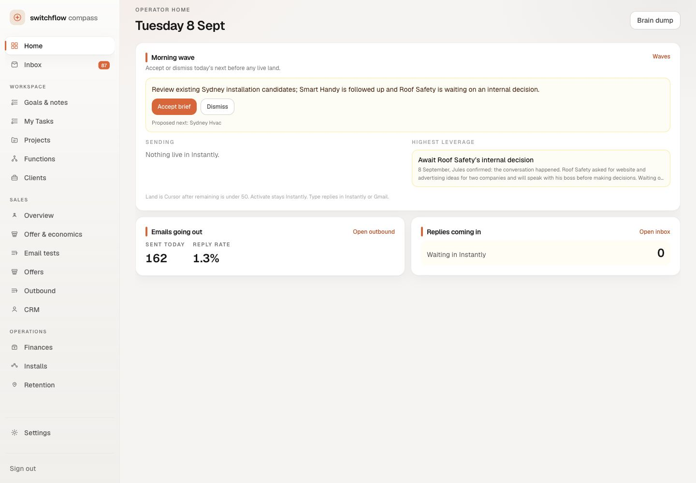

One complete Home reference. Review its hierarchy, responsive layouts and interactions before rollout.

One main decision, an ordered work index, and waiting context in the margin. Select 390 or 768 to review how the same hierarchy adapts.
Review and accept or dismiss the brief. Capture your own note, select tasks, and complete one locally. Switch folders with arrow keys; open and dismiss navigation.
Folio’s Home layout, shell, typography, spacing, colours and responsive behaviour. Other screens follow only after this reference is approved.